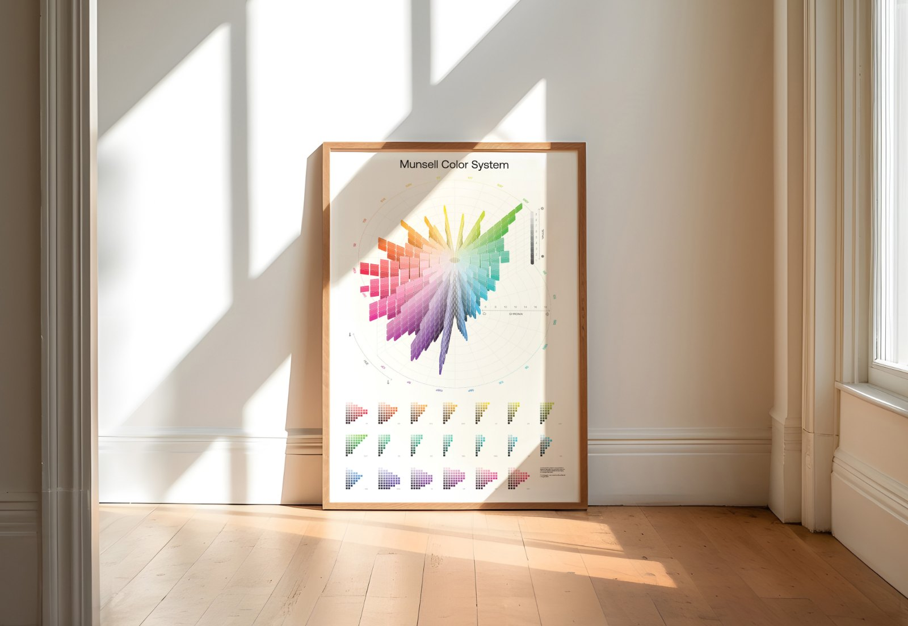
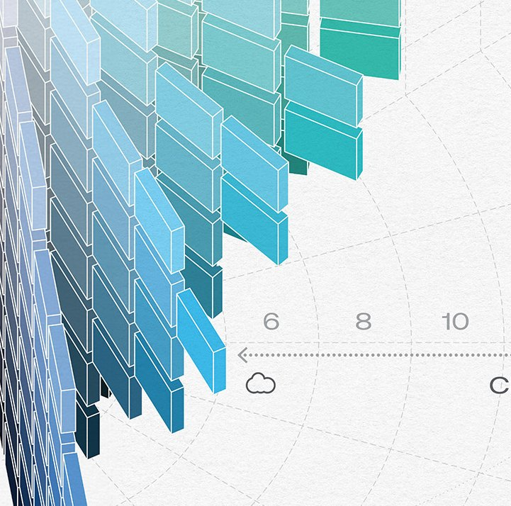
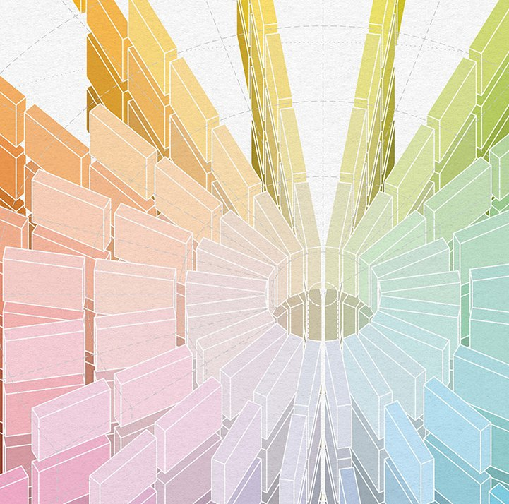
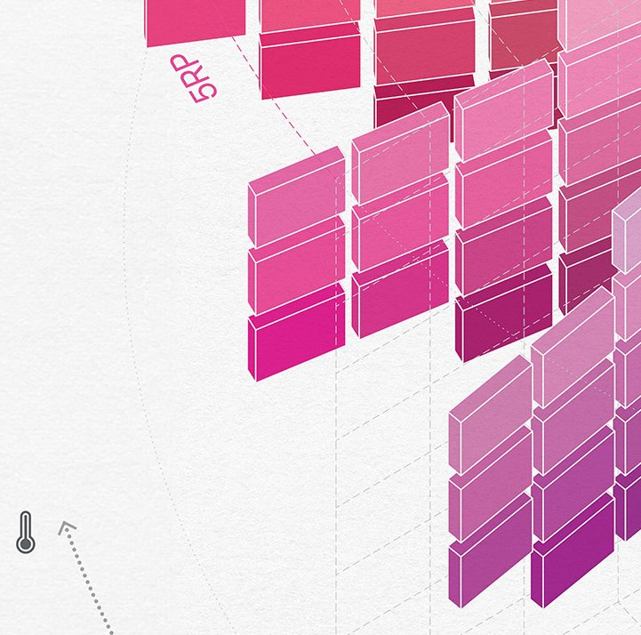
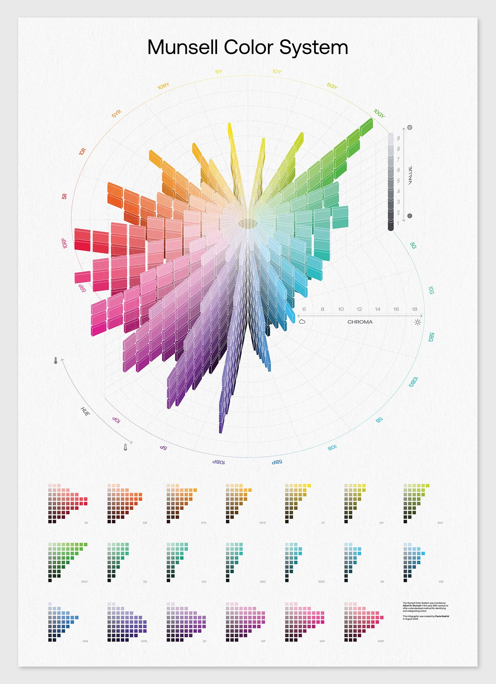

Munsell Color System
This infographic visually explores the Munsell Color System, invented by American artist and educator Albert H. Munsell in the early 20th century. The system classifies colors based on three key attributes: hue, value, and chroma. Modeled using Rhinoceros 3D software and further refined with Adobe Illustrator and InDesign, this project translates the complexities of color theory into a clear, engaging visual format. It offers an insightful guide to understanding color relationships and their practical applications in art, design, and science.




